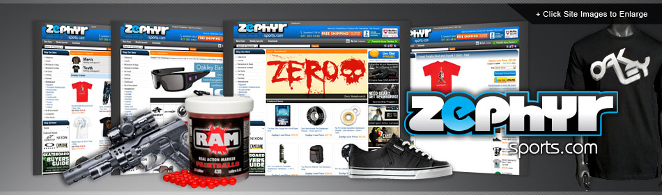

Zephyr Sports was founded in 2004 as a home-based business that sold Paintball products on eBay. As sales began to grow, Zephyr expanded its offerings and decided to build its own retail site. In 2006, Zephyr opened a brick and mortar store to accompany the Web site. Today, the company occupies an 8,000 square foot warehouse, has 18 employees and 14,000 products. Zephyr has three retail sites: Paintball, Airsoft and Sports.
In the beginning, Zephyr was manually handling order inventory, order processing and shipping, with CEO Bob Mullaney spending many a night writing addresses and processing orders by hand. As business expanded, product inventory and volume of sales increased, Zephyr needed a solution for automating processes to keep pace. In late 2004, they began searching for an e-commerce platform that could help grow their business.
Through eBay, Zephyr found Zoovy and was instantly attracted to the platform's desktop feature, which allows for ease of shipping (orders could be printed on a local system with access to customer service). This was an important component for Zephyr, as Mullaney didn't want multiple platforms for order processing, customer service, shipping, etc.
In addition, locating products quickly and trying to keep track of accurate inventory was proving to be a challenge. Zoovy's real-time inventory capabilities provided Zephyr with a clear pathway to see the precise location and quantity of a desired product at any given time.
Zoovy's platform allows Zephyr to automate all product listings and order processing on sites such as eBay, Amazon, Buy.com, and Sears. Zephyr can also push products out to places like Google and Bing at the click of a button. This automation freed up time for employees to focus on growing the business.
Zephyr's three retail sites each have their own branding, with different target customers and products. In order to efficiently run multiple sites, they needed one back-end interface. Zoovy enables Zephyr to seamlessly manage each site while keeping separate customer databases, checkout policies, payment methods, system messages, shipping methods, coupon codes and tax settings – all with a single click of a button.
It's all about automation – without Zoovy, I would have to hire multiple employees to do the same job. With manual data entry no longer required, human error has also been reduced.
~ Bob Mullaney, CEO, Zephyr Sports
Mullaney considers Zoovy's technology to be a big factor in the success and continued growth of his business.
We've found that having a site dedicated to each sport produces better sales than having one site that contains products in all sports. Zoovy makes it easy to create multiple sites, so that in five minutes, I can copy any layout, product info, etc. from one site to another.
~ Bob Mullaney, CEO, Zephyr Sports